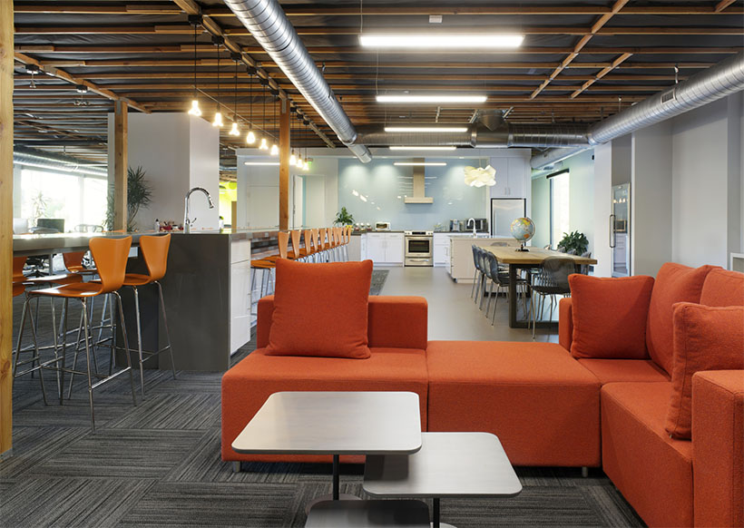
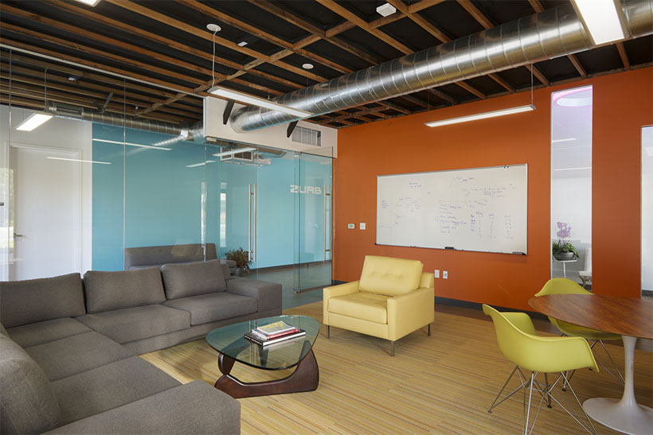

About Our Studio

Last year we moved into a fantastic new space after spending a year renovating a worn down, multi-tenant space. Today we're happy to share that our building was honored with a 2014 Design Award by the American Architects Institute of Santa Clara County (home to some of the most recognized technology companies in Silicon Valley).
We'd like to thank our architect and congratulate David Fenster and Modulus for an amazing job. After working in the space for the past year, we can attest to David's work as it continues to surpass the test of time! It's an amazing space and we're thankful everyday for the opportunity to work in a building specifically designed around the needs of our business.
Interior Spaces Designed for Designers
After spending many afternoons learning and observing how we worked, Modulus was able to design different spaces for the needs of our team. They spent countless hours going back and forth with us discussing everything from lighting to acoustics. It was incredible. Designing for a bunch of designers isn't the easiest of jobs.
Each room has a specific purpose and it provides our employees opportunity to spread out. Below are a few interior photos.
One of our many brainstorm rooms- this one is called Dream is Collapsing.
A view of the kitchen and eating area, the hub of our workspace.
The Friday room is for meetings and guests.
A Multi-Purpose Space
Five years ago, it was all about UX, but we saw through that. At the time, we were pretty stoked about figuring out the best way to get to answers in product design (still are!). However, we realized that there aren't a lot of designers out there that understand what it actually means to be a product designer.
UX is one part of it, but what are the rest of the pieces? This is the story of how you too can become a product designer. So stop being a UX/UI guru or prophet or whatever and start solving problems.
Five years ago, it was all about UX, but we saw through that. At the time, we were pretty stoked about figuring out the best way to get to answers in product design (still are!). However, we realized that there aren't a lot of designers out there that understand what it actually means to be a product designer.